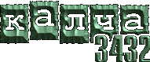

|
ул. Первомайская,73 |
22 декабря / 19.00.
1 день феста "Урал Рок`2000"
конкурс
Stackman
Исчезающий город
Acid Umbrellas
Москва-Луна
ЧП (Чистосердечное признание)
Ясен Перец
Лилит
Менуэт
Славяна
гости
Веселые
Бомбардировщики
Necrozzz
Корпорация V
23 декабря / 19.00.
2 день феста "Урал Рок`2000"
конкурс
Красносолнышко
Сучий Лесок
Падший Карлссон
Небо
Monterey (Киров)
Клонферта (Омск)
DeTrah(Березники, Пермская область)
Quaz!modo (Челябинск)
гости
П.У.П.(Челябинск)
Трали-Вали(Ижевск)
24 декабря / 19.00.
3 день феста "Урал Рок`2000"
конкурс
Рэй
Брэдбери
Эссе(Набережные Челны)
Тасторонамоста" (Пермь)
Приззрак Оперы
Секвойя (Петропавловск)
Весна
Шиза (Самара)
А.Т.О.М. (Тюмень).
гости
ВИО
Чернослив
Бабье Лето
ЖЮРИ ФЕСТИВАЛЯ "УРАЛ-РОК`2000".....................................
Александр Пантыкин
(супер-композитор)
Михаил Симаков
(программный директор радио
"Пилот")
Владимир Ведерников
(директор рок-центра "Сфинкс")
Андрей Морозов
(начальник Управления по делам
молодежи администрации города)
Владимир Устинов
(главный специалист Департамента
по делам молодежи Свердловской
области)
Николай Григорьев
(гитарный педагог и музыкальный
эксперт магазина "A&T Traid")
Николай Курилов
(главный редактор культовой газеты
"Калча 3432" и редактор отдела
"Культура" газеты "Вечерние
ВЕДОМОСТИ").
почетные члены жюри...........................................
Виктор Зайцев
(директор студии "НП-рекордз",
уже Москва)
Алексей Хоменко
("НП-видео", пока Екатеринбург)
На сайте рок-центра "Сфинкс" (www.sphinx.ur.ru) - трансляция концертного звука в режиме "on line" и голосование.
|
8 декабря / 20.00. НЕ ПОНЯТНО, ЧТО ЗА херь
Стекло рассвета
Overlook
Jahmaica
Stockmen
9 декабря / 20.00. Металлическая суббота
15 декабря / 20.00. День рождения группы "ВЕСНА"
Put In
Москва-Луна
Ювидло
16 декабря / 20.00. Сейшн фанатского клуба "Steel Monsters"